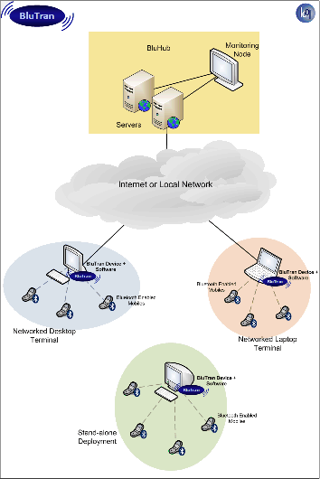

This is a USB based non-invasive, discreet hardware module which is attached to a host computer in the deployment area. This device handles the functionality of detecting the mobile phones and carrying out the end-to-end communication with the mobile phones.
The communication software resides on the host computer to which the communication device is attached in the deployment area. This software controls the working of the communication device and applies the required intelligent business logic to ensure that the functions like mobile device discovery, capability discovery, profile fingerprinting and intelligent file transfers are done correctly. It can be deployed as an independent standalone module or as a part of a managed network in which case it enables the central management server - BluHub - to control and monitor the device.
BluHub is the central content management and device monitoring server software. It enables the end devices to be monitored, configured and controlled remotely from a single location. Real time information regarding the status of the devices, file transfers etc. can be obtained centrally. Depending on this feedback, the end devices can be tweaked or fine-tuned to get the desired performance.
